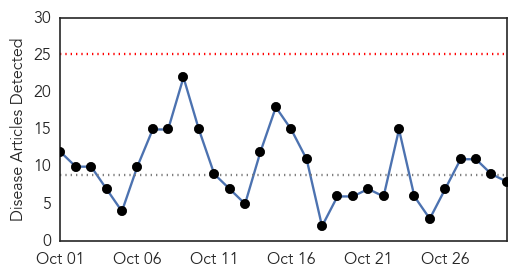
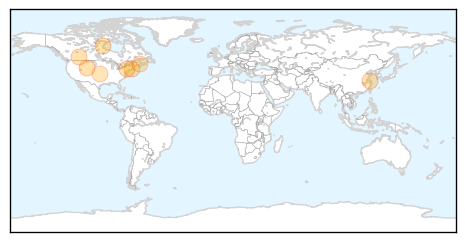

West Nile Virus
30-Day Web Trend
0 alerts, 0 warnings
30-Day Twitter Trend
3 alerts, 0 warnings

Article Locations

Article Confidences

Top Articles:
-
No articles found for Oct 30, 2014
Top Tweets:
-
No tweets found for Oct 30, 2014
Influenza
30-Day Web Trend
0 alerts, 0 warnings

30-Day Twitter Trend
1 alerts, 0 warnings

Article Locations
Article Confidences

Top Articles:
- 0.995
- Flu season may be early this year
- 0.992
- 78.1% NY State Healthcare Personnel Vaccinated Against Influenza in 2013-2014 – Mobile Health Influenza Vaccination Map Shows
- 0.991
- As Flu Season Approaches Officials Call For Vaccinations
- 0.947
- New Influenza Virus Affects Cattle, Pigs
- 0.946
- Let’s end the flu-shot debate for Alberta health-care workers
- 0.897
- Plan to Minimize Spread of Flu and Legal Risks in the Workplace during Flu Season
- 0.845
- Google data could improve forecasting of influenza levels
- 0.806
- Today's stories from newspapers in Caledon
Top Tweets:
- 0.935
- RT: The vaccine used in seasonal flu jabs cannot give you flu, it does not contain live influenza virus http://t.co/Vaw78vIHcn